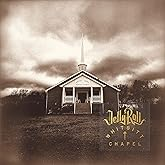
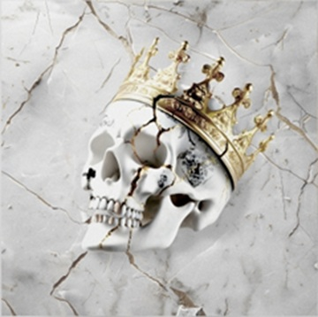

Music and Discography
This page includes information about three albums released by Jelly Roll. Each album section includes the album cover, album name, publishing date, and a list of songs.
Whitsitt Chapel

Release Date: June 2, 2023
Whitsitt Chapel is Jelly Roll's first country album. The album includes themes of struggle, redemption, faith, and personal growth.
Song List
- Halfway to Hell
- Church
- The Lost
- Behind Bars
- Nail Me
- Hold On Me
- Kill a Man
- Unlive
- Save Me
- She
- Need a Favor
- Dancing with the Devil
- Hungover in a Church Pew
Beautifully Broken

Release Date: October 11, 2024
Beautifully Broken is Jelly Roll's tenth studio album. The album includes songs such as "I Am Not Okay," "Liar," and "Get By."
Song List
- Winning Streak
- Burning
- Heart of Stone
- I Am Not Okay
- When the Drugs Don't Work
- Higher Than Heaven
- Liar
- Everyone Bleeds
- Get By
- Unpretty
Ballads of the Broken
Release Date: September 17, 2021
Ballads of the Broken includes several songs that helped Jelly Roll reach a wider audience, including "Son of a Sinner" and "Dead Man Walking."
Song List
- Dead Man Walking
- Backslide
- Son of a Sinner
- Over You
- Hollow
- Even Angels Cry
- Sober
- Empty House
- Mobile Home